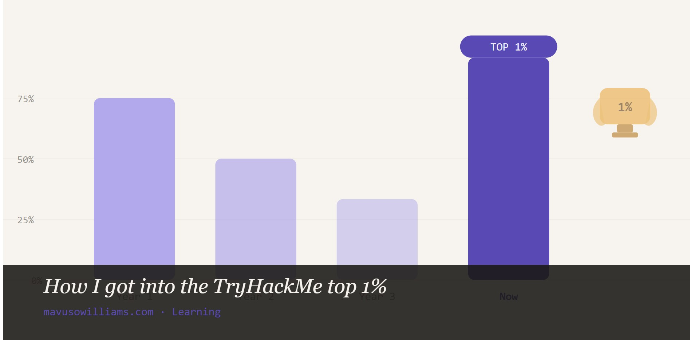
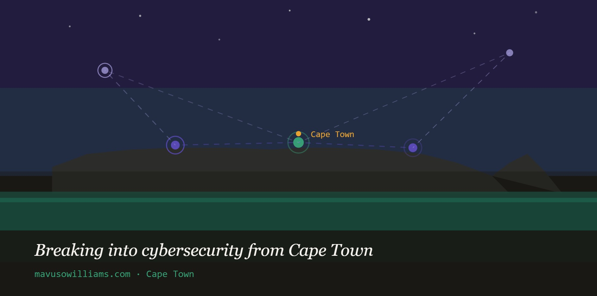
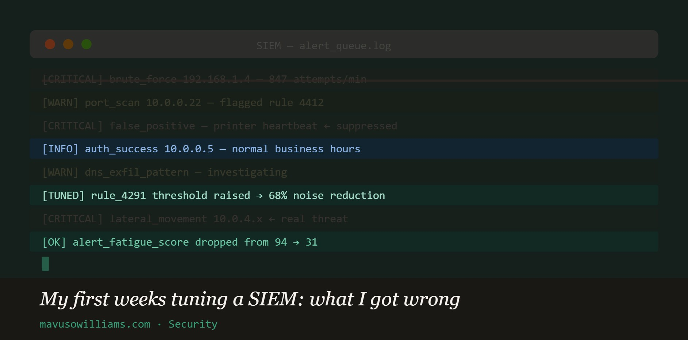
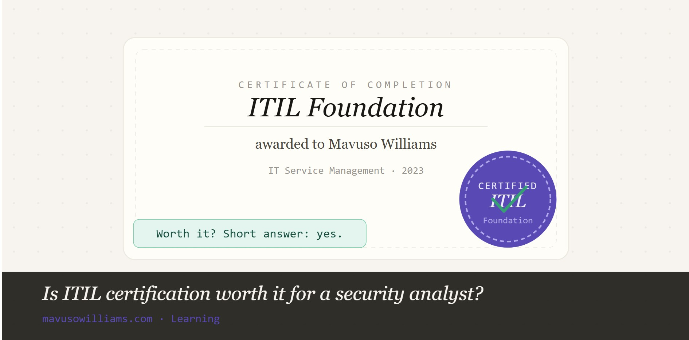
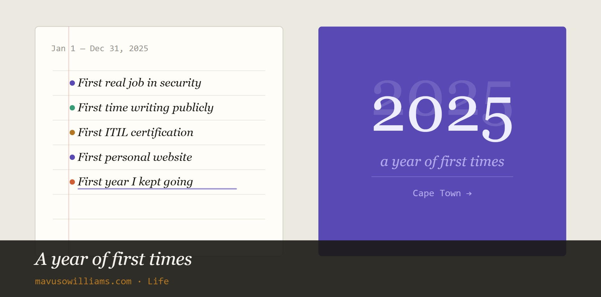

Writing
Thoughts from the terminal & beyond
Security deep-dives, learning notes, Cape Town dispatches, and whatever else I can't stop thinking about.

What actually happens inside a SOC?
Most people think it's just staring at dashboards all day. The reality is messier, more human, and more interesting than that.

How I got into the TryHackMe top 1%
It wasn't a grind. It was genuine curiosity, a good playlist, and a lot of late nights in Cape Town.

Breaking into cybersecurity from Cape Town
The African tech scene is growing fast — but there are still real barriers. Here's how I navigated them.

My first weeks tuning a SIEM: what I got wrong
Alert fatigue is real. Here's what I learned building detection rules that actually matter — and the ones that created noise.

Is ITIL certification worth it for a security analyst?
Short answer: yes, but not for the reason most people say. Here's my take after getting certified.

A year of first times
Reflections on starting a career, starting a site, and finally starting to write things down.